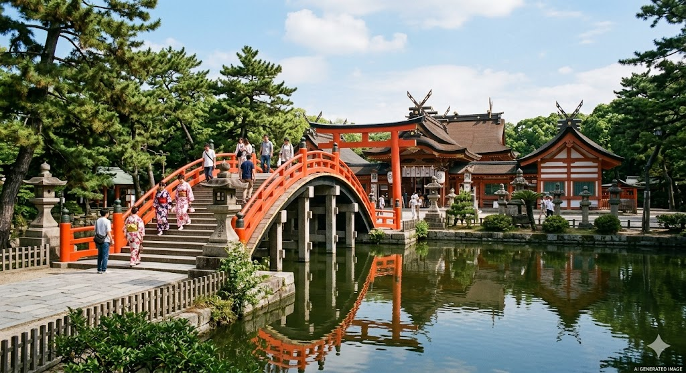

AI 生成意境圖📜 歷史與建築特色
住吉大社是日本全國約 2300 座住吉神社的總本宮，歷史極其悠久，建於西元 211 年。這裡供奉著航海守護神，是大阪人心中最重要的信仰中心之一。最為人稱道的是其獨特的建築風格「住吉造」，這是日本最古老的神社建築樣式之一，已被列為日本國寶。
神社內環境清幽，與市中心的繁華截然不同。茂密的樹林、莊嚴的本殿，以及充滿禪意的園林，讓人能在此遠離城市喧囂，體驗最地道的傳統日式文化。
✨ 參觀三大不容錯過亮點
- 反橋（太鼓橋）： 這座朱紅色的拱橋是住吉大社的象徵。橋面拱起的弧度極大，宛如彩虹跨越水面。據說走過這座橋便能洗淨塵世中的穢氣，也是許多攝影師捕捉傳統日本美學的經典角度。
- 國寶本殿： 住吉大社本殿分為四座，均保留了極為古老的「住吉造」建築特色。直線條的屋頂與強烈的色彩對比，展現了古代神道教的神聖與雄偉。
- 五大力石守： 在神社內尋找寫有「五」、「大」、「力」的小石頭，集齊後據說能獲得身體健康、心願成就等五種強大力量的庇佑，是極受參拜者歡迎的御守體驗。
💡 旅遊小貼士
前往住吉大社的最佳交通方式是搭乘充滿復古感的 **「阪堺電車（路面電車）」**。這種電車在大阪市區已非常少見，伴隨叮叮噹噹的車鈴聲駛入神社門口，本身就是一場極佳的旅遊體驗。推薦安排在早晨前往，空氣清新且遊客較少，能更好地感受這座千年神社的莊嚴寧靜。